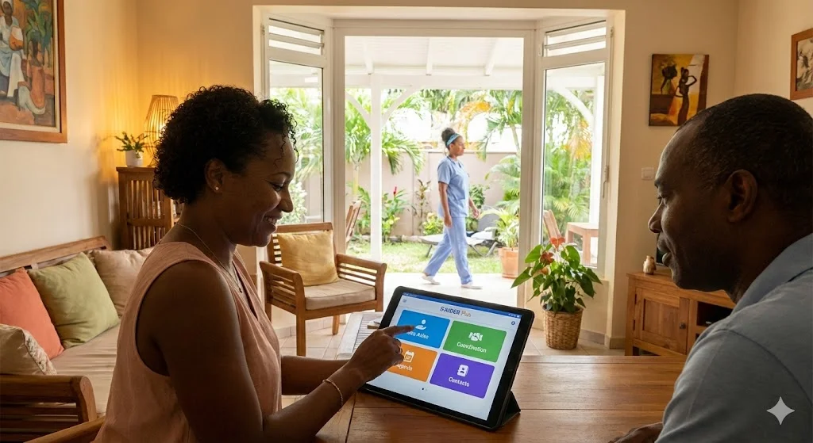
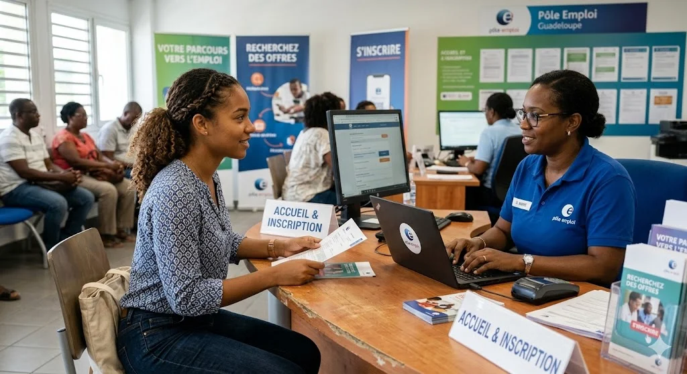

Un modèle à impact : de l'accompagnement à la dynamique
S'AIDER PLUS Village ne constitue pas uniquement une réponse sociale au vieillissement : il agit comme une infrastructure économique territoriale à double impact, social et productif.


Un moteur de silver économie et de développement territorial
En structurant une expérimentation du bien-vieillir, le Village contribue à faire émerger une filière locale de silver économie capable de générer des emplois, de mobiliser un écosystème d'acteurs et de soutenir l'innovation sociale et entrepreneuriale.
Le Village donne lieu à une croissance inclusive
Emplois supplémentaires à mobiliser en Guadeloupe d'ici 2030 pour répondre aux besoins de dépendance. Dont 5 635 ETP à domicile et 1 060 ETP en établissement.
Source : INSEE Analyses Guadeloupe n°49 — La Guadeloupe face au défi de la dépendance à l'horizon 2030
Postes d'aides à domicile à pourvoir en France d'ici 2030 — 98 200 créations nettes + 207 200 départs. Seuls ~81 500 jeunes entrants projetés.
Source : DARES — Les métiers en 2030
Village du bien-vieillir à l'échelle territoriale en Guadeloupe. Sur 3 500 tiers-lieux recensés en France, aucun n'est dédié à l'anticipation de la perte d'autonomie.
Source : Observatoire France Tiers-Lieux — Données 2023
Poids projeté de la filière silver économie en France en 2030, contre 130 Md€ en 2020. 300 000 emplois créés depuis 2013, +0,25 %/an de contribution au PIB.
Source : Filière Silver Économie — France Silver Eco
Chiffre d'affaires moyen annuel généré par un tiers-lieu en France (882 M€ cumulés), dont 46 % engagés dans l'économie sociale et solidaire.
Source : Observatoire France Tiers-Lieux — Données 2023
Rendre les métiers du soin désirables
410 000 offres d'emploi diffusées en 2025 pour le soin à la personne, 500 000 postes à pourvoir d'ici 4 ans, et une génération qui se détourne du secteur. Le Village ne se contente pas de recruter : il conçoit un environnement où les jeunes ont envie de s'engager.
Équipes autonomes de proximité
Des petites équipes locales qui décident elles-mêmes de leurs plannings, de leurs interventions et de leur coordination — sans management intermédiaire.
- Modèle inspiré de Buurtzorg (Pays-Bas)
- Expérimenté par la CNSA en France depuis 2020
- Regain de sens, baisse du turnover documentés
Source : CNSA — Évaluation SAAD en équipes autonomes (2022) · Soignons Humain
Un terrain de formation intégré
Le Village devient un lieu d'application conventionné avec les organismes de formation déjà présents en Guadeloupe. Les apprentis pratiquent dans un environnement neuf, bien équipé, inspirant.
- Conventionnement IFAS du CHU de la Guadeloupe (DEAS)
- Partenariat GRETA CFA GIP-DAIFI (apprentissage DEAS)
- Terrain d'application IGEP & Région Guadeloupe (ADVF, DEAES)
Sources : CHU Guadeloupe · GRETA CFA GIP-DAIFI · Région Guadeloupe
Qualité de vie & parcours lisibles
Le Village applique les trois leviers d'attractivité identifiés par l'ANACT : conditions de travail, qualité de vie, accès à la formation — déclinés à l'échelle d'une journée de travail.
- Progression ADVF → DEAES → DEAS → coordinateur
- Espaces de répit pour les salariés eux-mêmes
- Supervision et analyse de pratiques mensuelles
- Marque employeur portée par les équipes
Source : ANACT — Leviers d'attractivité médico-social (janvier 2025)
Une valeur ajoutée pour les partenaires
Chaque acteur du territoire fait face à ses propres tensions. Le Village a été pensé pour y répondre par construction — pas après-coup.
Pour les collectivités
- Réponse territoriale structurante
- Innovation sociale
- Signal exportable
Pour les financeurs
- Impact mesurable
- Modèle duplicable
- Innovation structurelle
Pour l'ARS
- Prévention plutôt que réparation
- Réduction du non-recours
- Fluidification des parcours
Pour les opérateurs
- Coordination facilitée
- Lisibilité des parcours
- Réduction des frictions